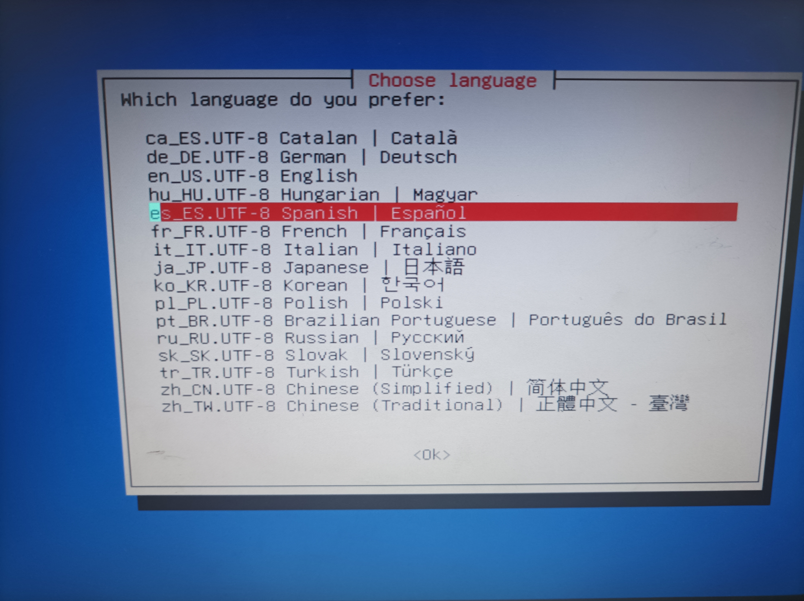

Clonezilla es un software portable que nos permitira crear y restaurar imagenes del sistema para que no perdamos nuestros datos.
En esta primera practica vamos a utilizar clonezilla en un equipo local y vamos a enseñar paso a paso su funcionamiento.
Creación de un USB de arranque:
Descargaremos la imagen ISO de clonezilla desde la moodle.
Luego tendremos que crear un USB de arranque con la imagen ISO.
Clonezilla:
Iniciamos el equipo y elegimos el USB como unidad de arranque, nos cargara la interfaz de clonezilla.
Seleccionaremos la primera opción: Clonezilla Live

ㅤ
Seleccionamos el idioma: Español.
ㅤ
Mantenemos la distribución del teclado

Finalmente iniciamos clonezilla

Nosotros queremos realizar una imagen del sistema del disco duro a un disco duro externo, para ello seleccionamos la primera opción → device-image

Seleccionamos local_dev aquí indicaremos el uso de un dispositivo local para copiar la imagen.

A continuación clonezilla comenzara a buscar unidades externas para clonar la imagen creada, esto suele tardar un tiempo.
Cuando encuentre el dispositivo lo seleccionamos. En mi caso es la partición de un pendrive llamada PEN2
Omitimos el checkeo para que sea más rapido
Aqui le damos a la opción DONE pulsamos la tecla TAB para movernos por ese submenu.
Seleccionamos el modo beginner, el modo principiante bastara para esta practica
Seleccionamos la primera opción, esto nos permitira guardar el disco local como imagen, la opción se llama: savedisk
Le damos un nombre a la imagen, yo lo dejare por defecto.
Seleccionamos el disco al que le queramos realizar la imágen.
Utilizaremos la opción de compresión zip.
Omitiremos la comprobación usando la opción sfsck.
Ahora seleccionamos la opción de NO, para que cuando terminemos de grabar la imagen no realice ninguna comprobación adicional.
Seleccionamos la primera opción senc para no cifrar la imágen.
Seleccionamos la opción de choose para que nos de a elegir si reiniciar o apagar el equipo cuando termine de clonar la imagen en el disco externo.
Si esta todo listo nos saldrán las letras en verde y le damos a enter para continuar.
Por ultimo le damos a la Y para comenzar la clonación del disco.

Comenzara el proceso de creación y copiar la imagen al disco externo.

Cuando acabe todo el proceso, seleccionamos la opción de poweroff y apagaremos el equipo.
Ya estaría todo listo ya tendríamos la imagen creada en el disco externo.